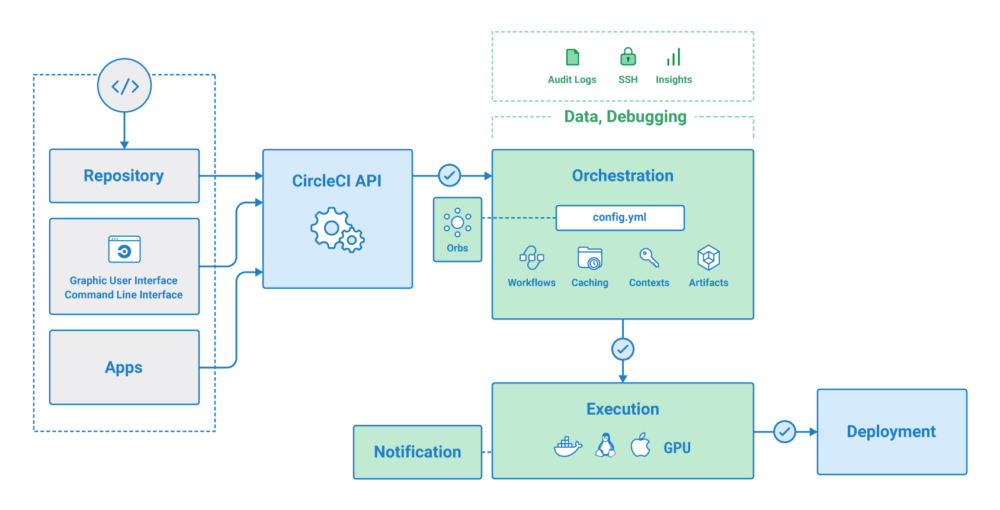

[CircleCI]CircleCIを上手に使おう
自動デプロイやテストチェック、コード規約チェックなど

目次
この記事はこんな人が書いています
 だちけん
だちけん
株式会社ムジカルを設立し、webアプリケーションの開発、webマーケティングを担当しています。
webアプリケーションでは、Vue.js、Ruby on Rails、Node.jsを用いての開発が得意です。
まったくゼロの状態から、要件定義を含めてシステム開発にとりかかったことで、幅広い知識を学習しながらよしなに進めるスキルを身につけました。
フリーランスとして、エンジニアリングやコンサルティングも行なっています。
詳しくはaboutを読んでみてください。
CIツールで企業では一番ポピュラーに使われているのでは？というCircleCI。
使いはじめはPRを作成する度怒られてイラだちを覚えるツールでしたが、今はすっかり通った時の快感に魅了されています。
今回は、そんなCircleCIを使いこなせるようになりたいということで自分の環境に追加してみたので、そのやり方をご紹介します。
ことばの紹介
まずは知らない方もいるかと思うので、ことばの紹介から。
わかってるよ！って人は飛ばしてください。
CircleCIとは
CircleCIの公式ドキュメントからとってきました。
CircleCI- CircleCI のミッションは、テクノロジー主導型の組織が最高の成果を上げられるようにサポートすることです。
インテリジェントな自動化を通して、エンジニアリング チームの生産性を向上させます。
CircleCI は、エンタープライズ クラスのサポートとサービスを提供すると共に、高い柔軟性によってスタートアップにも対応しています。
Linux、macOS、Android、Windows、さらに SaaS やファイアウォールの内側など、必要な場所で動作します。

めっちゃわかりやすい図ですね…
とりあえず、GitHubにPRを作成するといい感じにチェックをしてくれるやつです。
今回はrailsのテストやコードチェックを行いましょう。
使ってみましょう
それでは早速使っていきましょう。
今回は、下記の4つをやってみます。
- rspecの実行
- rubocopによる静的コード解析
- rails_best_practicesによる静的コード解析
- codecovによるカバレッジテスト
まずはgemfileに追加しましょう。
# gemfile
group :development, :test do
# Call 'byebug' anywhere in the code to stop execution and get a debugger console
gem 'byebug', platforms: [:mri, :mingw, :x64_mingw]
# testツール
gem 'rspec-rails'
gem 'factory_bot_rails'
# コーディング規約
gem 'rails_best_practices'
# CircleCIでテストするよう
gem 'rspec_junit_formatter'
# 静的コード解析
gem 'rubocop'
# testカバレッジ
gem 'codecov'
end
# .circleci/config.yml
version: 2.1
orbs:
slack: circleci/slack@3.4.2
codecov: codecov/codecov@1.1.1
executors:
default:
working_directory: ~/app
docker:
- image: circleci/ruby:2.6.3-node
environment:
- BUNDLER_VERSION: 2.0.2
- RAILS_ENV: 'test'
- RAILS_ENV: test
- PGHOST: 127.0.0.1
- PGUSER: root
- image: circleci/postgres:9.6.2-alpine
environment:
- POSTGRES_USER: postgres
- POSTGRES_DB: app_test
commands:
setup_database:
steps:
- run: mv ./config/database.ci.yml ./config/database.yml
- run:
name: Database setup
command: |
bundle exec rake db:create
bundle exec rake db:schema:load
jobs:
build:
executor:
name: default
steps:
- checkout
- restore_cache:
keys:
- gem-cache-{{ arch }}-{{ .Branch }}-{{ checksum "Gemfile.lock" }}
- gem-cache-{{ arch }}-{{ .Branch }}
- gem-cache
- run:
name: install dependencies
command: |
gem install bundler -v 2.0.2
bundle check --path=vendor/bundle || bundle install --path vendor/bundle --clean --jobs 4 --retry 3
- save_cache:
paths:
- ./vendor/bundle
key: gem-cache-{{ arch }}-{{ .Branch }}-{{ checksum "Gemfile.lock" }}
- setup_database
- persist_to_workspace:
root: .
paths: vendor/bundle
test:
executor:
name: default
steps:
- checkout
- attach_workspace:
at: ~/app
- restore_cache:
keys:
- gem-cache-{{ arch }}-{{ .Branch }}-{{ checksum "Gemfile.lock" }}
- gem-cache-{{ arch }}-{{ .Branch }}
- gem-cache
- run:
name: install dependencies
command: |
gem install bundler -v 2.0.2
bundle check --path=vendor/bundle || bundle install --path vendor/bundle --clean --jobs 4 --retry 3
- save_cache:
paths:
- ./vendor/bundle
key: gem-cache-{{ arch }}-{{ .Branch }}-{{ checksum "Gemfile.lock" }}
- setup_database
- run:
name: Run rails best practice
command: bundle exec rails_best_practices
- run:
name: Run rubocop
command: bundle exec rubocop
- run:
name: Run rspec
command: |
bundle exec rspec \
--format progress \
--format RspecJunitFormatter
- store_test_results:
path: test_results
- codecov/upload:
file: test_results/rspec.xml
- slack/status:
webhook: '${SLACK_WEBHOOK}'
workflows:
version: 2
build_and_test:
jobs:
- build
- test:
requires:
- build
ポイントを解説していきますね。
orbsとは
公式ドキュメントにわかりやすい説明があったので引用します。
Orbs は、名前に基づいてインポートするかインラインで構成する、設定ファイルのパッケージです。
プロジェクト内またはプロジェクト間で共有および再利用して、構成作業を簡略化することができます。
ということで、まあざっくりパッケージみたいなものですね。
今回は
の2つを入れています。
executorsとは
こちらも公式ドキュメントから引用です。
executors では、ジョブのステップを実行する環境を定義します。
これにより、複数のジョブで 1 つの Executor 定義を再利用できます。
ということで、別のjobでも同様の環境で実行する際にはこちらのexecutorsに定義しておくと共通で使用できるようになります。
今回は、build、testの2つのjobがあるので、executorsで環境を定義しました。
commandsとは
またも公式ドキュメントから引用です。
commands では、ジョブ内で実行する一連のステップをマップとして定義します。
これにより、複数のジョブで 1 つのコマンド定義を再利用できます。
ということで、複数ジョブをまとめて定義しておけます。
今回はsetup_databaseというコマンドを定義しています。
単純にDB周りの設定をまとめているだけですね。
workflowsとは
はい。公式ドキュメントですね。
すべてのジョブのオーケストレーションに使用します。
各ワークフローは、キーとなるワークフロー名と、値となるマップで構成します。
名前は、その config.yml 内で一意である必要があります。
ワークフロー構成の最上位のキーは version と jobs です。
ということで、jobの順番を指定したりできるやつですね。
今回の場合はbuildとtestのjobを切り分けて、その順番をworkflowで指定しています。
testにrequiresでbuildを指定することで、build→testの順になるように指定しています。
restore_cache/keysとは
restore_cacheはキャッシュを読み込む系のやつですね。
workspaceの構築などをキャッシュから行えるので高速化できます。
配下にあるこれらは読み込むキャッシュのkeyですね。
keys:
- gem-cache-{{ arch }}-{{ .Branch }}-{{ checksum "Gemfile.lock" }}
- gem-cache-{{ arch }}-{{ .Branch }}
- gem-cache
save_cache/keysとは
save_cacheはキャッシュを保存します。
上記のrestore_cacheで読み込むためのキャッシュを作成します。
配下にあるこれらは作成するキャッシュのkeyですね。
keys:
- gem-cache-{{ arch }}-{{ .Branch }}-{{ checksum "Gemfile.lock" }}
- gem-cache-{{ arch }}-{{ .Branch }}
- gem-cache